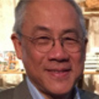

Anthony Tak On Leung
Presidente, jubilado
Nació y creció en Hong Kong; estudió en la Universidad de Wisconsin. Fue empresario y trabajó para la Organización Internacional para las Migraciones como oficial de administración y finanzas en Manila. Ha sido voluntario en varias ONG en Hong Kong, incluyendo Refugee Concern, la Asociación Hong Chi, la Fundación Pam Baker, y presidió The Leprosy Project en Sichuan, China. Fue rotario activo por más de 30 años.